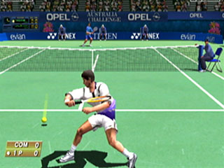
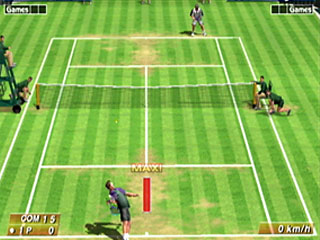

|
A la hora de conversionar un juego de una recreativa a una sistema doméstico como una consola se deben tener en cuenta algunos aspectos:
1.-La duración de un juego de recreativa es muy inferior a lo esperado en versión doméstica. Por tanto, un factor clave a la hora de
conversionar es añadir más modos de juego, opciones, personajes a elegir... más alternativas, por así decir.
2.- Los gráficos tienen que mostrar la fuerza de la placa en que se basa y en medida de lo posible intentar igualarlos o incluso superarlos, incluyendo
las animaciones de los personajes y física de, en este caso, la pelota.
3.- La jugabilidad tiene adaptarse a un pad de consola en la manera de que cuando se juegue ni se note la diferencia, es decir, mantener intacta la jugabilidad
de la máquina recreativa (uno de los puntos más difíciles, pues la jugabilidad de una recreativa es "única", el ambiente,
el joystick a la medida, sus botones, la caja...).
Y má o menos estos serian los puntos básicos de una buena conversión.
Pues bien, Virtua Tennis cumple con creces todos estos puntos y más. A decir verdad, quizás estemos en conversión de recreativa a consola mejor
hecha de la historia, pues incluso se podría decir que la supera. Pero eso no sería gran cosa si no dijera que la recreativa es de las más jugables
y adictivas de las que he probado. En el salón recreativo, tendrás que pedir hora si quieres jugar una partida... Eso sí, todo un lujo para los
usuarios de Dreamcast, pues si tienes una DC este juego es completamente imprescindible, ¡aunque no te guste el tenis!.
En fin, una maravilla gráfica, de jugabilidad y diversión (prueba a jugar a dobles, o si puedes a 4 jugadores...), uno de mis juegos favoritos. |
  |